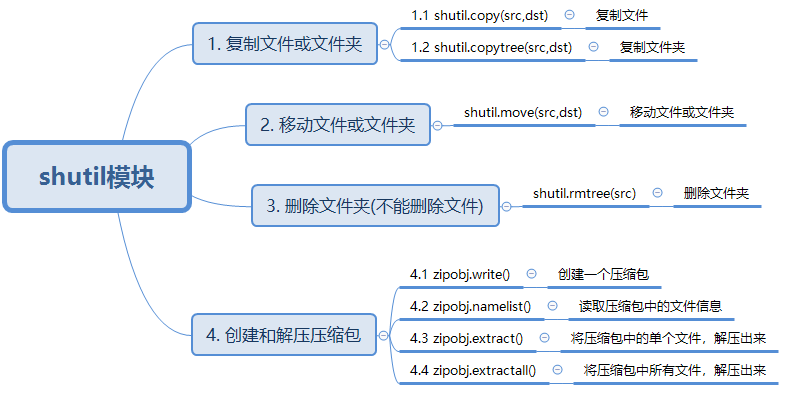

python的一些乱七八糟
本文不涉及python较基础的print、input、if、for等语法，只记录一些日常用到的函数和参数。
1. python 库
1.1 shutil库

2. python 函数的用法
2.1 绘图相关参数
2.1.1 cmap函数
这个函数中可选的cmap参数包括： 例：
cmap='seismic'
seismic：红-白-蓝配色，用于表示正负值之间的差异。
jet：黑-蓝-青-黄-红配色，用于表示连续变化的数据。
coolwarm：深蓝-白-红配色，用于表示正负值之间的差异。
viridis：从深绿到黄绿到黄的单调配色，用于表示连续变化的数据。
plasma：紫-粉红-橙-黄单调配色，用于表示连续变化的数据。
除了上面列出的常用的颜色映射外，还有许多其他的颜色映射可供选择。在选择颜色映射时，需要根据数据类型和分布特性进行评估，并根据需要调整对比度、亮度、饱和度等参数，以便最大程度地突出数据的特征。